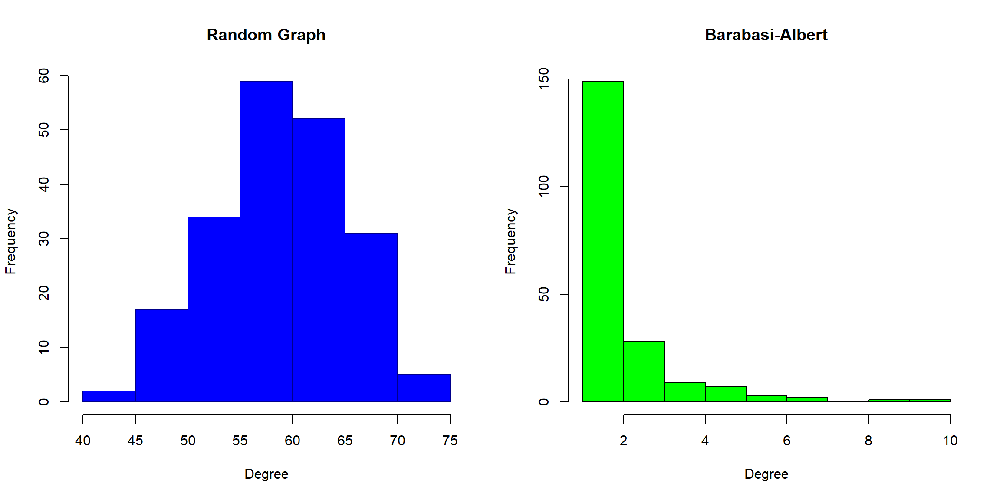
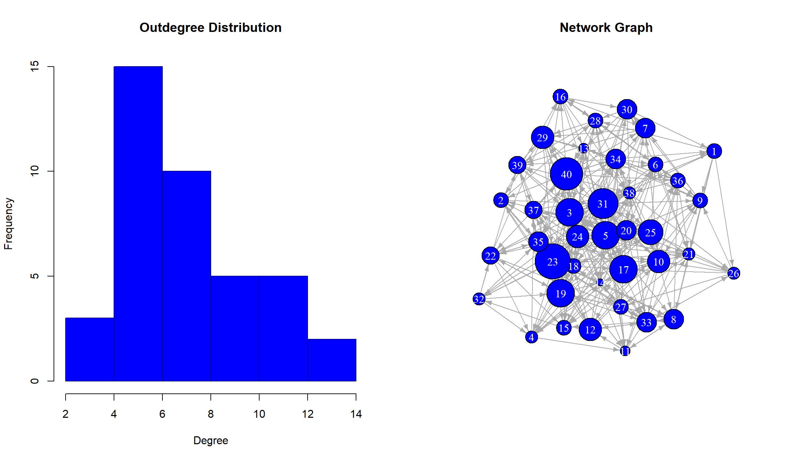
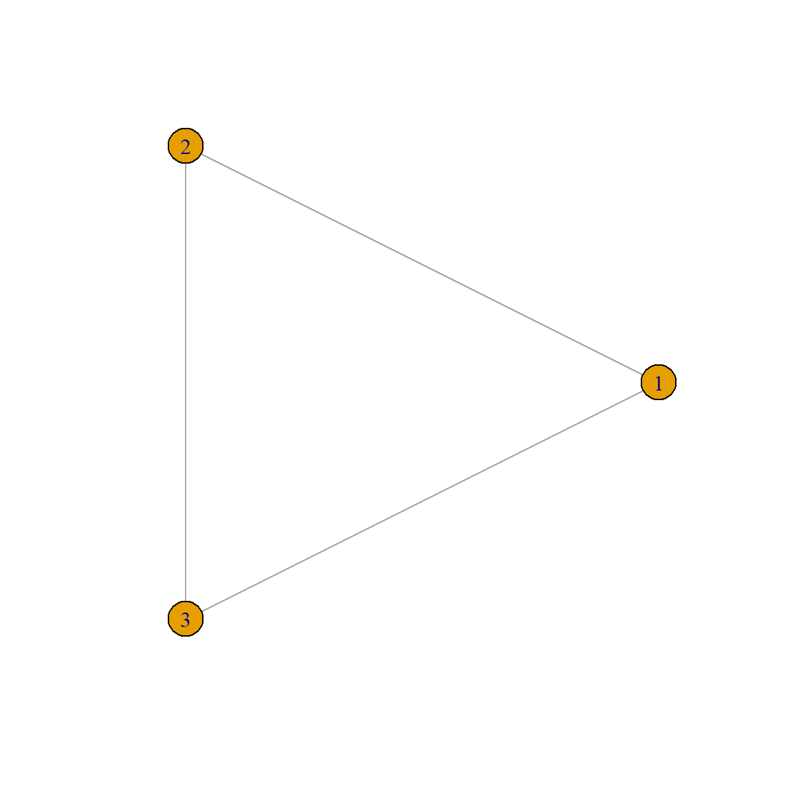

Directed vs. Undirected. Suppose you are given the adjacency matrix, \(A_{ij}\), of a digraph, \(G(V,E)\) and you are given three different methods to make \(G\) undirected:
degree function, check that the size** of a network is half the sum of the degrees for an undirected graph, while it is just the sum of the indegree or outdegree in a digraph**
The idea is to check that
\[\begin{equation} L = \frac{\sum_{i=1}^n k_i}{2} \end{equation}\]
in the case of an undirected graph and without the factor 2 for a digraph (along any of the directions). Then, let’s generate a pair of graphs (we are going to use a random network, but you can do it as you wish since we are just checking a property and not demonstrating it)
now, we can use the degree function on each of them
u_deg <- degree(ex2_unet)
di_indeg <- degree(ex2_dnet, mode = "in")
di_outdeg <- degree(ex2_dnet, mode = "out")and, as another part of the problem, let’s find the size of the networks
Now we can just perform a logical test (you may want to show the values)
## Undirected Graph: TRUE## Directed Graph (indegrees) TRUE## Directed Graph (outdegrees) TRUENetwork Analysis Consider the following graphs
graph.formula(1-2, 2-3, 3-4, 4-1, 4-2, 5-3, 5-1, 6-1, 6-5, 7-8)
graph.formula(1-+2, 2-+3, 3-+4, 4++1, 4+-2, 5-+3, 5+-1, 6-+1, 6++5, 7+-8)then
Let’s first define the graphs
ex3_unet <- graph.formula(1-2, 2-3, 3-4, 4-1, 4-2, 5-3, 5-1, 6-1, 6-5, 7-8)
ex3_dnet <- graph.formula(1-+2, 2-+3, 3-+4, 4++1, 4+-2, 5-+3, 5+-1, 6-+1, 6++5, 7+-8)For the first question, in the case of the undirected graph we find
## 8 x 8 sparse Matrix of class "dgCMatrix"
## 1 2 3 4 5 6 7 8
## 1 . 1 . 1 1 1 . .
## 2 1 . 1 1 . . . .
## 3 . 1 . 1 1 . . .
## 4 1 1 1 . . . . .
## 5 1 . 1 . . 1 . .
## 6 1 . . . 1 . . .
## 7 . . . . . . . 1
## 8 . . . . . . 1 .while for the directed case this is
## 8 x 8 sparse Matrix of class "dgCMatrix"
## 1 2 3 4 5 6 7 8
## 1 . 1 . 1 1 . . .
## 2 . . 1 1 . . . .
## 3 . . . 1 . . . .
## 4 1 . . . . . . .
## 5 . . 1 . . 1 . .
## 6 1 . . . 1 . . .
## 7 . . . . . . . .
## 8 . . . . . . 1 .Both satisfy the well-known symmetry properties of the adjacency matrix and may be converted to a usual matrix in case we need.
For the second question we only use the undirected networks, then
ex3_local_ccoef <- transitivity(ex3_unet, type = "local")
ex3_av_ccoef <- mean(ex3_local_ccoef, na.rm = TRUE)
ex3_global_ccoef <- transitivity(ex3_unet, type = "global")This can be easily summarized as
| Average | Global |
|---|---|
| 0.5555556 | 0.4736842 |
We do not show the local clustering coefficient since it is just a list (you can print it if you want). In any case, this means that there is, roughly, a 50% of tightly connected nodes.
For the third part we use only the directed graph, then
## [1] 0.3333333this means that the 33.33% of the links are bidirectional.
To answer the fourth question we are going to use the undirected graph only. Then since we are asked about the paths of length 4, we find the foruth power of the adjacency matrix, for this we first need to covnert the sparse matrix into a matrix structure
from the output of the forth power we just need the element \(A^5_{1,5}\) then
## [1] 12which means that there are 12 such paths in the network.
Finally, for the fifth question we need a bit more of coding, then we are going to:
cycles = NULL
for (v1 in V(ex3_unet)){
for(v2 in neighbors(ex3_unet, v1, mode = "all")){
cycles = c(cycles, lapply(all_simple_paths(ex3_unet, v2, v1, mode = "all"),
function(x) c(v1, x)))
}}
length(cycles[which(sapply(cycles, length) == 5)])## [1] 24then, we find that there are 24 such cycles of length 4 (remember that then length of the path comes with the number of links, not with the number of nodes!)
mean() function, for both an undirected and a digraph
In this case we may go for the formula
\[\begin{equation} \langle k\rangle = \frac{1}{N}\sum_{i,j} A_{ij} \end{equation}\]
then, let’s define a graph and find the sum of the elements of its adjacency matrix
ex4_net <- random.graph.game(100, 0.2)
ex4_admat <- as.matrix(get.adjacency(ex4_net))
ex4_sum_deg <- sum(apply(ex4_admat, 1, sum))
ex4_N <- gorder(ex4_net)
cat(sprintf("Average Degree: %4.2f", ex4_sum_deg/ex4_N))## Average Degree: 20.86Which can be easily seen to be the same that if the find the average of the output of the degree function.
Degree Distribution. Given the graphs generated by the following commands
Make the histograms of the corresponding degree distributions and discuss them (just from the EDA perspective)We may directly use the hist function as
par(mfrow = c(1,2))
hist(degree(ex5_rand_gr),
col = "blue",
border = "darkblue",
xlab = "Degree",
ylab = "Frequency",
main = "Random Graph")
hist(degree(ex5_ba_gr),
col = "green",
xlab = "Degree",
ylab = "Frequency",
main = "Barabasi-Albert")
Then we immdiately see that the random graph on the left has degrees evenly distributed around the mean, which implies the absence of too connected nodes (hubs) or of nodes with low number of connections. The Barábasi-Albert presents the oposite distribution: we find that most nodes have a very low number of connections and that the number of nodes with a high number of nodes is not negligible.
That said, from a purely statistical perspective, for the random graph we may use the average degree as central tendency since it makes sense, but this is not the case of the Barábasi-Albert model, where the distribution is so right skewed that the mean loses its meaning and we may render the median as the right central tendency to describe the distribution.
Degree Distribution. Given the adjacency matrix, find the average degree and the degree distributions. Then plot side by side the histograms of the distributions and the network graph using as node’s size the degree. Use the following directed network
Let’s fin the adjacency matrix
from here we can find the degree distribution as the sum along rows or columns (depending if we want it as indegree or outdegree). Remember that if we sum along the rows this returns the outdegree, and the indegree along the columns. We are only going to find the outdegree case
and so we can directly make the plots
par(mfrow = c(1,2))
hist(ex6_outdeg_dist,
col = "Blue",
border = "darkblue",
xlab = "Degree",
ylab = "Frequency",
main = "Outdegree Distribution")
plot(ex6_net,
layout = layout.fruchterman.reingold,
vertex.size = ex6_outdeg_dist*2,
vertex.color = "Blue",
vertex.label.color = "White",
edge.arrow.size = 0.5,
main = "Network Graph")
Graphs Use the following network
Remember to useset.seed(), with your own value, to have a repeated graph. Then plot it using degree, bewteenness, closeness and eigenvector centralities to represent the size of the nodes. For the color use a different one to mark the 10% of the nodes with the highest values. Choose a proper layout, node size scales and color scheme. Repeat the exercise using Gephi instead of igraph.
Since reciprocity implies that one node has incoming and outgoing links from and to the same node, this means that there is a probability of \(p^2\) to establish such two links in each node for each of the other nodes. In a network with \(N\) nodes, each of them may be connected to other \(N-1\) nodes, then giving a total number of links of \((N-1)p^2\), from and to any of the nodes. These values will be the inputs of the principal diagonal of the \(A^2\) matrix, then then expected reciprocity will be
\[\begin{equation} R = \frac{1}{L}\text{Tr}(A^2) = \frac{N(N-1)}{L}p^2 \end{equation}\]
In an arbitrary network with \(L\) links the minimum reciprocity occurs when there is no reciprocal link, then the reciprocity would simply be 0. On the other hand, the maximum is when all the links are reciprocal, i.e. if \(L=L_max\) and \(p=1\) in our previous formula, which means that the reciprocity is 1.
It may be, houwever, that we have a limited number of links \(L < L_max\) but all of them are reciprocal, i.e. there will be \(L/2\) ingoing and \(L/2\) outgoing shared directions. In this case, in the Trace of \(A^2\) we will just find the value of \(L\) and therefore again a maximum value of 1. You can make a small R script to check this.
A clustering coefficient of 1 implies that all the nodes in the neighborhood of a node have all the possible connections with all the other nodes in that neighborhood, i.e. a complete graph.
In this type of graphs, the nodes have as degree, the maximum possible one: \(N-1\), then the only possibility for a degree 2 is that \(N = 3\), then

## Local Clustering Coefficient: 1 1 1## Node Degree: 2 2 2get.adjacency() function of igraph
The function will just count the number of 0s in the matrix and then find the rate of them in the whole dimensionality of the adjancency matrix. Since we are asked to compute the sparsity we will make that the function does not return anything, but just prints a message with the value
sparsity <- function(x){
A <- as.matrix(get.adjacency(x))
n_zeros = 0
for(i in 1:nrow(A)){
for(j in 1:ncol(A)){
if(A[i,j] == 0){
n_zeros = n_zeros + 1
}
}
}
spars = n_zeros/(dim(A)[1] * dim(A)[2])
cat(paste0(sprintf("The sparisty of the matrix is: %3.2f", 100*spars), "%"))
}once we have defined it, let’s use it
## The sparisty of the matrix is: 78.50%Load the dataset UKfaculty from the igraphdata package and perform a complete EDA (check the documentation and the webpage of the dataset for information on it). This should, at least, contain the following pieces:
Include any graph, chart or summary that may help in the visualization of the different properties. Make a description of the network based on all the characteristics you compute.
The representation of the network must be done in Gephi and imported into your report.